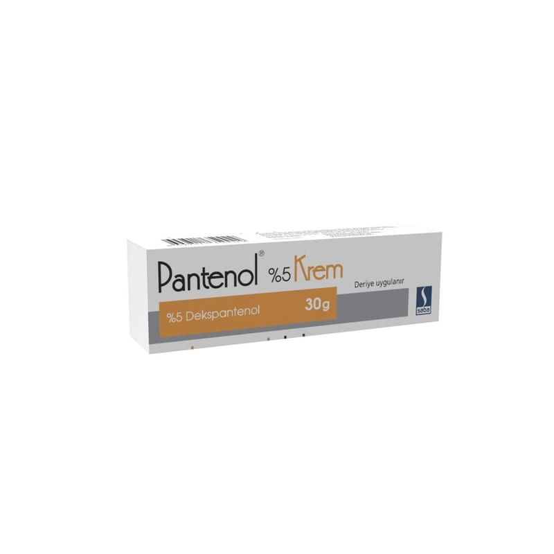

Pantenol %5 Krem, 30 g

Ne için kullanılır
KT · Bölüm 1 PANTENOL, etkin madde olarak dekspantenol içerir ve beyaz, pütürsüz, homojen görünüşlü, özel kokulu kremdir. 30 g krem içeren HDPE vidalı kapaklı alüminyum tüpte, kullanma talimatı ile birlikte karton kutu içerisinde kullanıma sunulmaktadır. Enfeksiyon riski olan tüm yüzeysel yara türleri, bacak ülseri ve dekübit ülser (yatak yarası) gibi kronik yaralar, cilt enfeksiyonları, emziren annelerde çatlak meme uçlarının tedavisi ve anüs çatlakları tedavisi, doku harabiyeti, cerrahi yaralar, bebek bezleri nedeniyle oluşan eritem (kızarıklık) tahriş olmuş derinin onarılması için kullanılır. Derinin daha hızlı ve daha düzgün bir dokuyla kapanmasına yardımcı olur. Cildi esnek ve nemli tutar.